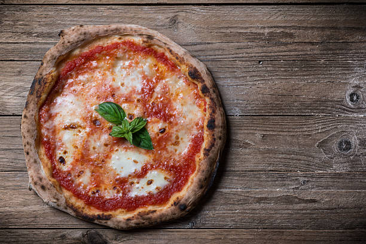

Pizza Margherita
Homepage

Description
Pizza Margherita is a traditional Neapolitan pizza known for its simple and fresh ingredients: a thin, chewy crust topped with vibrant
tomato sauce, fresh mozzarella, and aromatic basil leaves. Named after Queen Margherita of Savoy, it reflects the colors of the
Italian flag—red, white, and green—and is celebrated for its elegant simplicity and delicious flavor.
Ingredients
- For the dough
- 250g all-purpose or bread flour
- 3/4 cup warm water
- 1 teaspoon instant yeast
- 1/2 teaspoon salt
- 1 teaspoon olive oil
- For the toppings
- 1/2 cup tomato passata or crushed tomatoes
- 1 clove garlic (optional), minced
- Salt and olive to taste
- 125g fresh mozzarella, torn into pieces
- Fresh basil leaves
- Extra virgin olive oil for drizzling
Steps
- Make the dough
- Mix flour, yeast, and salt in a bowl.
- Add water and olive oil, mix until dough forms.
- Knead on a floured surface for about 8–10 minutes.
- Let it rise in a greased bowl, covered, for 1–2 hours, or until doubled.
- Preheat the Oven
- Preheat your oven to 260°C or as hot as it gets. If you have a pizza stone, place it inside.
- Prepare the sauce
- Mix tomato passata with a pinch of salt, garlic (optional), and a splash of olive oil.
- Shape the pizza
- Roll or stretch the dough into a thin circle.
- Place on parchment paper or a floured pizza peel if using a stone.
- Assemble the Pizza
- Spread a thin layer of tomato sauce over the dough.
- Scatter pieces of mozzarella evenly.
- Add a few fresh basil leaves.
- Drizzle with a little olive oil.
- Bake
- Bake for 7–10 minutes, until the crust is puffed and golden and the cheese is bubbling.
- Garnish with a few extra basil leaves and serve hot.